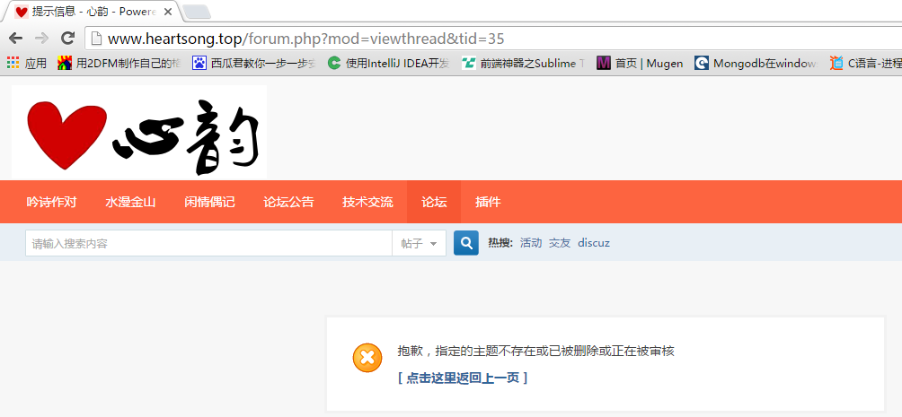
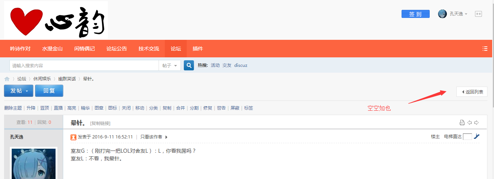
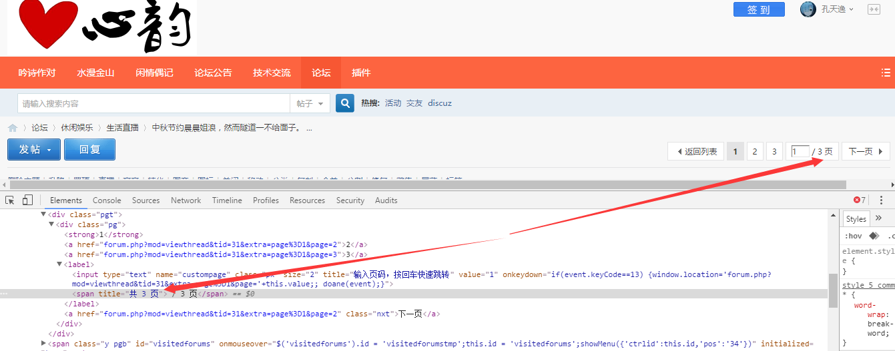

<!DOCTYPE html>
<html>
<head><meta name="generator" content="Hexo 3.8.0">
  <meta charset="utf-8">
  

  
  <title>Scrapy定向爬虫教程(三)——爬取多个页面 | 孔天逸&#39;Blog</title>
  <meta name="viewport" content="width=device-width, initial-scale=1, maximum-scale=1">
  <meta name="description" content="声明本教程为原创教程，转载请注明出处http://kongtianyi.cn/2016/09/28/python/Scrapy-Lesson-3/ 本节内容本部分所实现的功能是，批量的爬取网页信息，不再是像以前那样只能下载一个页面了。也就是说，分析出网页的url规律后，用特定的算法去迭代，达到把整个网站的有效信息都拿下的目的。因为本部分讲完后，功能已经到了可以使用的地步，所以我把本部分的结果独立出">
<meta name="keywords" content="Scrapy,Python">
<meta property="og:type" content="article">
<meta property="og:title" content="Scrapy定向爬虫教程(三)——爬取多个页面">
<meta property="og:url" content="http://kongtianyi.github.io/2016/09/28/python/Scrapy-Lesson-3/index.html">
<meta property="og:site_name" content="孔天逸&#39;Blog">
<meta property="og:description" content="声明本教程为原创教程，转载请注明出处http://kongtianyi.cn/2016/09/28/python/Scrapy-Lesson-3/ 本节内容本部分所实现的功能是，批量的爬取网页信息，不再是像以前那样只能下载一个页面了。也就是说，分析出网页的url规律后，用特定的算法去迭代，达到把整个网站的有效信息都拿下的目的。因为本部分讲完后，功能已经到了可以使用的地步，所以我把本部分的结果独立出">
<meta property="og:locale" content="zh-Hans">
<meta property="og:image" content="http://kongtianyi.github.io/image/spider/scrapy-13.png">
<meta property="og:image" content="http://kongtianyi.github.io/image/spider/scrapy-14.png">
<meta property="og:image" content="http://kongtianyi.github.io/image/spider/scrapy-16.png">
<meta property="og:image" content="http://kongtianyi.github.io/image/spider/scrapy-15.png">
<meta property="og:image" content="http://kongtianyi.github.io/image/spider/scrapy-17.png">
<meta property="og:updated_time" content="2016-11-05T08:30:53.832Z">
<meta name="twitter:card" content="summary">
<meta name="twitter:title" content="Scrapy定向爬虫教程(三)——爬取多个页面">
<meta name="twitter:description" content="声明本教程为原创教程，转载请注明出处http://kongtianyi.cn/2016/09/28/python/Scrapy-Lesson-3/ 本节内容本部分所实现的功能是，批量的爬取网页信息，不再是像以前那样只能下载一个页面了。也就是说，分析出网页的url规律后，用特定的算法去迭代，达到把整个网站的有效信息都拿下的目的。因为本部分讲完后，功能已经到了可以使用的地步，所以我把本部分的结果独立出">
<meta name="twitter:image" content="http://kongtianyi.github.io/image/spider/scrapy-13.png">
  
    <link rel="alternate" href="/atom.xml" title="孔天逸&#39;Blog" type="application/atom+xml">
  
  
    <link rel="icon" href="/favicon.png">
  
  
    <link href="//fonts.googleapis.com/css?family=Source+Code+Pro" rel="stylesheet" type="text/css">
  
  <link rel="stylesheet" href="/css/style.css">
</head>
</html>
<body>
  <div id="container">
    <div id="wrap">
      <header id="header">
  <div id="banner"></div>
  <div id="header-outer" class="outer">
    <div id="header-title" class="inner">
      <h1 id="logo-wrap">
        <a href="/" id="logo">孔天逸&#39;Blog</a>
      </h1>
      
        <h2 id="subtitle-wrap">
          <a href="/" id="subtitle">いらしゃいませ。</a>
        </h2>
      
    </div>
    <div id="header-inner" class="inner">
      <nav id="main-nav">
        <a id="main-nav-toggle" class="nav-icon"></a>
        
          <a class="main-nav-link" href="/">Home</a>
        
          <a class="main-nav-link" href="/archives">Archives</a>
        
      </nav>
      <nav id="sub-nav">
        
          <a id="nav-rss-link" class="nav-icon" href="/atom.xml" title="RSS Feed"></a>
        
        <a id="nav-search-btn" class="nav-icon" title="Search"></a>
      </nav>
      <div id="search-form-wrap">
        <form action="//google.com/search" method="get" accept-charset="UTF-8" class="search-form"><input type="search" name="q" class="search-form-input" placeholder="Search"><button type="submit" class="search-form-submit">&#xF002;</button><input type="hidden" name="sitesearch" value="http://kongtianyi.github.io"></form>
      </div>
    </div>
  </div>
</header>
      <div class="outer">
        <section id="main"><article id="post-python/Scrapy-Lesson-3" class="article article-type-post" itemscope="" itemprop="blogPost">
  <div class="article-meta">
    <a href="/2016/09/28/python/Scrapy-Lesson-3/" class="article-date">
  <time datetime="2016-09-28T02:33:09.000Z" itemprop="datePublished">2016-09-28</time>
</a>
    
  <div class="article-category">
    <a class="article-category-link" href="/categories/Python/">Python</a>
  </div>

  </div>
  <div class="article-inner">
    
    
      <header class="article-header">
        
  
    <h1 class="article-title" itemprop="name">
      Scrapy定向爬虫教程(三)——爬取多个页面
    </h1>
  

      </header>
    
    <div class="article-entry" itemprop="articleBody">
      
        <h2 id="声明"><a href="#声明" class="headerlink" title="声明"></a>声明</h2><p>本教程为原创教程，转载请注明出处<a href="http://kongtianyi.cn/2016/09/28/python/Scrapy-Lesson-3/" target="_blank" rel="noopener">http://kongtianyi.cn/2016/09/28/python/Scrapy-Lesson-3/</a></p>
<h2 id="本节内容"><a href="#本节内容" class="headerlink" title="本节内容"></a>本节内容</h2><p>本部分所实现的功能是，批量的爬取网页信息，不再是像以前那样只能下载一个页面了。也就是说，分析出网页的url规律后，用特定的算法去迭代，达到把整个网站的有效信息都拿下的目的。<br>因为本部分讲完后，功能已经到了可以使用的地步，所以我把本部分的结果独立出来，把项目上传到了github，小伙伴可以下载参考，地址<a href="https://github.com/kongtianyi/heartsong" target="_blank" rel="noopener">https://github.com/kongtianyi/heartsong</a>。教程余下的其他部分是添加功能和优化，今后我会另外创建一个ex项目上传到github。</p>
<a id="more"></a>
<h2 id="分析url"><a href="#分析url" class="headerlink" title="分析url"></a>分析url</h2><p>不管是Discuz模板，phpWind模板，还是百度贴吧，甚至某些新闻网，都是采用id的方式来组织网页url的。这就给我们编写定向爬虫带来了极大的便利。好，来看一下Discuz模板<a href="http://www.heartsong.top" target="_blank" rel="noopener">心韵论坛</a>的url：<br><figure class="highlight plain"><table><tr><td class="gutter"><pre><span class="line">1</span><br><span class="line">2</span><br><span class="line">3</span><br></pre></td><td class="code"><pre><span class="line">http://www.heartsong.top/forum.php?mod=viewthread&amp;tid=13&amp;extra=page%3D1</span><br><span class="line">http://www.heartsong.top/forum.php?mod=viewthread&amp;tid=31</span><br><span class="line">http://www.heartsong.top/forum.php?mod=viewthread&amp;tid=31&amp;extra=&amp;page=2</span><br></pre></td></tr></table></figure></p>
<p>共同点一目了然，其实我们不妨把参数改一改，空的参数去掉，下面三个url跟上面的三个请求到的页面是一样的<br><figure class="highlight plain"><table><tr><td class="gutter"><pre><span class="line">1</span><br><span class="line">2</span><br><span class="line">3</span><br></pre></td><td class="code"><pre><span class="line">http://www.heartsong.top/forum.php?mod=viewthread&amp;tid=13</span><br><span class="line">http://www.heartsong.top/forum.php?mod=viewthread&amp;tid=31</span><br><span class="line">http://www.heartsong.top/forum.php?mod=viewthread&amp;tid=31&amp;page=2</span><br></pre></td></tr></table></figure></p>
<p>局势更清晰了，所谓的tid，就是帖子的id，而参数page，就是若主题帖分页的话，主题帖的某一页，当然第一页也可以加上page参数，<code>http://www.heartsong.top/forum.php?mod=viewthread&amp;tid=13&amp;page=1</code>,一样可以请求到网页。<br>大部分的网站首页上都会有“最新帖子”，“最新新闻”这种模块，点进去就能找到tid的上限，若是没有的话，那就乖乖多次尝试吧，下限一般都是从零开始，不必多说。而page参数，需要我们在主题帖的第一页通过网页元素的分析去寻找出来。<br><br>根据我的经验，在很多论坛里，包括我的这个小破论坛，都或多或少的遭到广告的侵袭，会有很多tid对应的帖子被管理员删掉，所以下面的代码里我们要对这种帖子做相应的处理。一般来说，Discuz被删帖的tid或者是还没排到的tid会返回如下页面<br></p>
<h2 id="爬取思路"><a href="#爬取思路" class="headerlink" title="爬取思路"></a>爬取思路</h2><p>通过以上的分析，我们可以得出这样的思路：<br>1 通过某种机制去迭代tid<br>2 在主题帖第一页中分析出总页数，去迭代带page参数的url</p>
<h2 id="一些杂项"><a href="#一些杂项" class="headerlink" title="一些杂项"></a>一些杂项</h2><p>对于某些网站，他们有识别爬虫的机制，所以我们需要对我们的爬虫进行一定的伪装，在<code>heartsong_spider.py</code>中加入以下项。<br>其中，cookies在后面教程的回帖部分会用到，此处可以先置空。<br><figure class="highlight python"><table><tr><td class="gutter"><pre><span class="line">1</span><br><span class="line">2</span><br><span class="line">3</span><br><span class="line">4</span><br><span class="line">5</span><br><span class="line">6</span><br><span class="line">7</span><br><span class="line">8</span><br><span class="line">9</span><br><span class="line">10</span><br><span class="line">11</span><br><span class="line">12</span><br><span class="line">13</span><br><span class="line">14</span><br></pre></td><td class="code"><pre><span class="line"><span class="comment"># 用来保持登录状态，可把chrome上拷贝下来的字符串形式cookie转化成字典形式，粘贴到此处</span></span><br><span class="line">cookies = &#123;&#125;</span><br><span class="line"></span><br><span class="line"><span class="comment"># 发送给服务器的http头信息，有的网站需要伪装出浏览器头进行爬取，有的则不需要</span></span><br><span class="line">headers = &#123;</span><br><span class="line">    <span class="comment"># 'Connection': 'keep - alive',</span></span><br><span class="line">    <span class="string">'User-Agent'</span>: <span class="string">'Mozilla/5.0 (X11; Linux x86_64) AppleWebKit/537.36 (KHTML, like Gecko) Chrome/52.0.2743.82 Safari/537.36'</span></span><br><span class="line">&#125;</span><br><span class="line"></span><br><span class="line"><span class="comment"># 对请求的返回进行处理的配置</span></span><br><span class="line">meta = &#123;</span><br><span class="line">    <span class="string">'dont_redirect'</span>: <span class="keyword">True</span>,  <span class="comment"># 禁止网页重定向</span></span><br><span class="line">    <span class="string">'handle_httpstatus_list'</span>: [<span class="number">301</span>, <span class="number">302</span>]  <span class="comment"># 对哪些异常返回进行处理</span></span><br><span class="line">&#125;</span><br></pre></td></tr></table></figure></p>
<h2 id="重载start-requests"><a href="#重载start-requests" class="headerlink" title="重载start_requests"></a>重载start_requests</h2><p>在找到tid的上限后，要想带着上面配置的杂项去发起Request请求，我们需要重载一个函数，配置使用<code>star_urls</code>所发起的第一条请求。<br>这里对<code>heartsong_spider.py</code>中的<code>yield</code>做一下解释，它既可以传出一个<code>item</code>到pipeline进行加工，也可以传出一个新的Request请求。在传出一个新请求的时候，就会多开启一个线程，Scrapy是异步多线程的爬虫框架，不需要我们对多线程有过多的了解。<br><figure class="highlight python"><table><tr><td class="gutter"><pre><span class="line">1</span><br><span class="line">2</span><br><span class="line">3</span><br><span class="line">4</span><br><span class="line">5</span><br><span class="line">6</span><br><span class="line">7</span><br><span class="line">8</span><br><span class="line">9</span><br></pre></td><td class="code"><pre><span class="line"><span class="function"><span class="keyword">def</span> <span class="title">start_requests</span><span class="params">(self)</span>:</span></span><br><span class="line">    <span class="string">"""</span></span><br><span class="line"><span class="string">    这是一个重载函数，它的作用是发出第一个Request请求</span></span><br><span class="line"><span class="string">    :return:</span></span><br><span class="line"><span class="string">    """</span></span><br><span class="line">    <span class="comment"># 带着headers、cookies去请求self.start_urls[0],返回的response会被送到</span></span><br><span class="line">    <span class="comment"># 回调函数parse中</span></span><br><span class="line">    <span class="keyword">yield</span> Request(self.start_urls[<span class="number">0</span>],callback=self.parse, headers=self.headers,</span><br><span class="line">                            cookies=self.cookies, meta=self.meta)</span><br></pre></td></tr></table></figure></p>
<h2 id="编写迭代tid的函数"><a href="#编写迭代tid的函数" class="headerlink" title="编写迭代tid的函数"></a>编写迭代tid的函数</h2><p>找到了tid的上限之后，我们的策略是从上限向0迭代，当然，要生成新的url，只需要对老的url串进行简单的处理就OK了<br><figure class="highlight python"><table><tr><td class="gutter"><pre><span class="line">1</span><br><span class="line">2</span><br><span class="line">3</span><br><span class="line">4</span><br><span class="line">5</span><br><span class="line">6</span><br><span class="line">7</span><br><span class="line">8</span><br><span class="line">9</span><br><span class="line">10</span><br><span class="line">11</span><br><span class="line">12</span><br><span class="line">13</span><br><span class="line">14</span><br></pre></td><td class="code"><pre><span class="line"><span class="function"><span class="keyword">def</span> <span class="title">get_next_url</span><span class="params">(self, oldUrl)</span>:</span></span><br><span class="line">    <span class="string">'''</span></span><br><span class="line"><span class="string">    description: 返回下次迭代的url</span></span><br><span class="line"><span class="string">    :param oldUrl: 上一个爬去过的url</span></span><br><span class="line"><span class="string">    :return: 下次要爬取的url</span></span><br><span class="line"><span class="string">    '''</span></span><br><span class="line">    <span class="comment"># 传入的url格式：http://www.heartsong.top/forum.php?mod=viewthread&amp;tid=34</span></span><br><span class="line">    l = oldUrl.split(<span class="string">'='</span>)  <span class="comment">#用等号分割字符串</span></span><br><span class="line">    oldID = int(l[<span class="number">2</span>])</span><br><span class="line">    newID = oldID - <span class="number">1</span></span><br><span class="line">    <span class="keyword">if</span> newID == <span class="number">0</span>:  <span class="comment"># 如果tid迭代到0了，说明网站爬完，爬虫可以结束了</span></span><br><span class="line">        <span class="keyword">return</span></span><br><span class="line">    newUrl = l[<span class="number">0</span>] + <span class="string">"="</span> + l[<span class="number">1</span>] + <span class="string">"="</span> + str(newID)  <span class="comment">#构造出新的url</span></span><br><span class="line">    <span class="keyword">return</span> str(newUrl)  <span class="comment"># 返回新的url</span></span><br></pre></td></tr></table></figure></p>
<h2 id="迭代request请求"><a href="#迭代request请求" class="headerlink" title="迭代request请求"></a>迭代request请求</h2><p>有了找到下一个url的函数之后，我们就可以在适当的位置添加如下代码，发起新的请求，“适当的位置”包括以下两种情况：</p>
<ul>
<li>本页的数据获取完成</li>
<li>本页被删除，无内容</li>
</ul>
<figure class="highlight python"><table><tr><td class="gutter"><pre><span class="line">1</span><br><span class="line">2</span><br><span class="line">3</span><br><span class="line">4</span><br><span class="line">5</span><br></pre></td><td class="code"><pre><span class="line"><span class="comment"># 发起下一个主题贴的请求</span></span><br><span class="line">next_url = self.get_next_url(response.url)  <span class="comment"># response.url就是原请求的url</span></span><br><span class="line"><span class="keyword">if</span> next_url != <span class="keyword">None</span>:  <span class="comment"># 如果返回了新的url</span></span><br><span class="line">        <span class="keyword">yield</span> Request(next_url, callback=self.parse, headers=self.headers,</span><br><span class="line">                                cookies=self.cookies, meta=self.meta)</span><br></pre></td></tr></table></figure>
<h2 id="分析总页数"><a href="#分析总页数" class="headerlink" title="分析总页数"></a>分析总页数</h2><p>打开一个有分页的主题帖，和一个没有分页的主题贴，找不同<br><br><br>先判断页面内有没有分页的框，通过之前介绍的检查网页元素的办法找到总页数，通过XPath定位，然后通过一个简单的正则把总页数拿出来。<br><br><figure class="highlight plain"><table><tr><td class="gutter"><pre><span class="line">1</span><br><span class="line">2</span><br><span class="line">3</span><br><span class="line">4</span><br></pre></td><td class="code"><pre><span class="line">pages = selector.xpath(&apos;//*[@id=&quot;pgt&quot;]/div/div/label/span&apos;)</span><br><span class="line">if pages:  # 如果pages不是空列表，说明该主题帖分页</span><br><span class="line">    pages = pages[0].re(r&apos;[0-9]+&apos;)[0]  # 正则匹配出总页数</span><br><span class="line">    print &quot;This post has&quot;, pages, &quot;pages&quot;</span><br></pre></td></tr></table></figure></p>
<h2 id="迭代带page参数的url"><a href="#迭代带page参数的url" class="headerlink" title="迭代带page参数的url"></a>迭代带page参数的url</h2><p>分析出了总页数之后，无非就是拼接出子页的url，然后发起Request请求，不过要注意，回调函数不能再是<code>parse</code>了，因为那样的话会在这里无限的生成Request。所以我们需要自己定义一个函数<code>sub_parse</code>，去处理子页的response。<br><figure class="highlight plain"><table><tr><td class="gutter"><pre><span class="line">1</span><br><span class="line">2</span><br><span class="line">3</span><br><span class="line">4</span><br><span class="line">5</span><br><span class="line">6</span><br><span class="line">7</span><br><span class="line">8</span><br><span class="line">9</span><br><span class="line">10</span><br><span class="line">11</span><br></pre></td><td class="code"><pre><span class="line"># response.url格式： http://www.heartsong.top/forum.php?mod=viewthread&amp;tid=34</span><br><span class="line"># 子utl格式： http://www.heartsong.top/forum.php?mod=viewthread&amp;tid=34&amp;page=1</span><br><span class="line">tmp = response.url.split(&apos;=&apos;)  # 以=分割url</span><br><span class="line"># 循环生成所有子页面的请求</span><br><span class="line">for page_num in xrange(2, int(pages) + 1):</span><br><span class="line"># 构造新的url</span><br><span class="line">    sub_url = tmp[0] + &apos;=&apos; + tmp[1] + &apos;=&apos; + tmp[2] + &apos;page=&apos; + str(page_num)</span><br><span class="line">    # 注意此处的回调函数是self.sub_parse,就是说这个请求的response会传到</span><br><span class="line">    # self.sub_parse里去处理</span><br><span class="line">    yield Request(sub_url,callback=self.sub_parse, headers=self.headers,</span><br><span class="line">                            cookies=self.cookies, meta=self.meta)</span><br></pre></td></tr></table></figure></p>
<p><code>sub_parse</code>:<br><figure class="highlight plain"><table><tr><td class="gutter"><pre><span class="line">1</span><br><span class="line">2</span><br><span class="line">3</span><br><span class="line">4</span><br><span class="line">5</span><br><span class="line">6</span><br><span class="line">7</span><br><span class="line">8</span><br><span class="line">9</span><br><span class="line">10</span><br><span class="line">11</span><br><span class="line">12</span><br><span class="line">13</span><br><span class="line">14</span><br><span class="line">15</span><br><span class="line">16</span><br><span class="line">17</span><br><span class="line">18</span><br><span class="line">19</span><br></pre></td><td class="code"><pre><span class="line">def sub_parse(self, response):</span><br><span class="line">    &quot;&quot;&quot;</span><br><span class="line">    用以爬取主题贴除首页外的其他子页</span><br><span class="line">    :param response:</span><br><span class="line">    :return:</span><br><span class="line">    &quot;&quot;&quot;</span><br><span class="line">    selector = Selector(response)</span><br><span class="line">    table = selector.xpath(&apos;//*[starts-with(@id, &quot;pid&quot;)]&apos;)  # 取出所有的楼层</span><br><span class="line">    for each in table:</span><br><span class="line">        item = HeartsongItem()  # 实例化一个item</span><br><span class="line">        # 通过XPath匹配信息，注意extract（）方法返回的是一个list</span><br><span class="line">        item[&apos;author&apos;] = each.xpath(&apos;tr[1]/td[@class=&quot;pls&quot;]/div[@class=&quot;pls favatar&quot;]/div[@class=&quot;pi&quot;]/div[@class=&quot;authi&quot;]/a/text()&apos;).extract()[0]</span><br><span class="line">        item[&apos;post_time&apos;] = each.xpath(&apos;tr[1]/td[@class=&quot;plc&quot;]/div[@class=&quot;pi&quot;]&apos;).re(r&apos;[0-9]+-[0-9]+-[0-9]+ [0-9]+:[0-9]+:[0-9]+&apos;)[0]</span><br><span class="line">        content_list = each.xpath(&apos;.//td[@class=&quot;t_f&quot;]&apos;).xpath(&apos;string(.)&apos;).extract()</span><br><span class="line">        content = &quot;&quot;.join(content_list)  # 将list转化为string</span><br><span class="line">        item[&apos;url&apos;] = response.url  # 用这种方式获取网页的url</span><br><span class="line">        # 把内容中的换行符，空格等去掉</span><br><span class="line">        item[&apos;content&apos;] = content.replace(&apos;\r\n&apos;, &apos;&apos;).replace(&apos; &apos;, &apos;&apos;).replace(&apos;\n&apos;, &apos;&apos;)</span><br><span class="line">        yield item  # 将创建并赋值好的Item对象传递到PipeLine当中进行处理</span><br></pre></td></tr></table></figure></p>
<h2 id="完整代码"><a href="#完整代码" class="headerlink" title="完整代码"></a>完整代码</h2><p><code>settings.py</code>，<code>pipelines.py</code>，<code>item.py</code>相较于第二节都没有改动。<br><code>heart_song.py</code>:<br><figure class="highlight python"><table><tr><td class="gutter"><pre><span class="line">1</span><br><span class="line">2</span><br><span class="line">3</span><br><span class="line">4</span><br><span class="line">5</span><br><span class="line">6</span><br><span class="line">7</span><br><span class="line">8</span><br><span class="line">9</span><br><span class="line">10</span><br><span class="line">11</span><br><span class="line">12</span><br><span class="line">13</span><br><span class="line">14</span><br><span class="line">15</span><br><span class="line">16</span><br><span class="line">17</span><br><span class="line">18</span><br><span class="line">19</span><br><span class="line">20</span><br><span class="line">21</span><br><span class="line">22</span><br><span class="line">23</span><br><span class="line">24</span><br><span class="line">25</span><br><span class="line">26</span><br><span class="line">27</span><br><span class="line">28</span><br><span class="line">29</span><br><span class="line">30</span><br><span class="line">31</span><br><span class="line">32</span><br><span class="line">33</span><br><span class="line">34</span><br><span class="line">35</span><br><span class="line">36</span><br><span class="line">37</span><br><span class="line">38</span><br><span class="line">39</span><br><span class="line">40</span><br><span class="line">41</span><br><span class="line">42</span><br><span class="line">43</span><br><span class="line">44</span><br><span class="line">45</span><br><span class="line">46</span><br><span class="line">47</span><br><span class="line">48</span><br><span class="line">49</span><br><span class="line">50</span><br><span class="line">51</span><br><span class="line">52</span><br><span class="line">53</span><br><span class="line">54</span><br><span class="line">55</span><br><span class="line">56</span><br><span class="line">57</span><br><span class="line">58</span><br><span class="line">59</span><br><span class="line">60</span><br><span class="line">61</span><br><span class="line">62</span><br><span class="line">63</span><br><span class="line">64</span><br><span class="line">65</span><br><span class="line">66</span><br><span class="line">67</span><br><span class="line">68</span><br><span class="line">69</span><br><span class="line">70</span><br><span class="line">71</span><br><span class="line">72</span><br><span class="line">73</span><br><span class="line">74</span><br><span class="line">75</span><br><span class="line">76</span><br><span class="line">77</span><br><span class="line">78</span><br><span class="line">79</span><br><span class="line">80</span><br><span class="line">81</span><br><span class="line">82</span><br><span class="line">83</span><br><span class="line">84</span><br><span class="line">85</span><br><span class="line">86</span><br><span class="line">87</span><br><span class="line">88</span><br><span class="line">89</span><br><span class="line">90</span><br><span class="line">91</span><br><span class="line">92</span><br><span class="line">93</span><br><span class="line">94</span><br><span class="line">95</span><br><span class="line">96</span><br><span class="line">97</span><br><span class="line">98</span><br><span class="line">99</span><br><span class="line">100</span><br><span class="line">101</span><br><span class="line">102</span><br><span class="line">103</span><br><span class="line">104</span><br><span class="line">105</span><br><span class="line">106</span><br><span class="line">107</span><br><span class="line">108</span><br><span class="line">109</span><br><span class="line">110</span><br><span class="line">111</span><br><span class="line">112</span><br><span class="line">113</span><br><span class="line">114</span><br><span class="line">115</span><br><span class="line">116</span><br><span class="line">117</span><br><span class="line">118</span><br><span class="line">119</span><br><span class="line">120</span><br><span class="line">121</span><br><span class="line">122</span><br><span class="line">123</span><br><span class="line">124</span><br><span class="line">125</span><br><span class="line">126</span><br><span class="line">127</span><br><span class="line">128</span><br><span class="line">129</span><br><span class="line">130</span><br><span class="line">131</span><br><span class="line">132</span><br><span class="line">133</span><br><span class="line">134</span><br></pre></td><td class="code"><pre><span class="line"><span class="comment"># -*- coding: utf-8 -*-</span></span><br><span class="line"></span><br><span class="line"><span class="comment"># import scrapy # 可以用这句代替下面三句，但不推荐</span></span><br><span class="line"><span class="keyword">from</span> scrapy.spiders <span class="keyword">import</span> Spider</span><br><span class="line"><span class="keyword">from</span> scrapy.selector <span class="keyword">import</span> Selector</span><br><span class="line"><span class="keyword">from</span> scrapy <span class="keyword">import</span> Request</span><br><span class="line"><span class="keyword">from</span> heartsong.items <span class="keyword">import</span> HeartsongItem  <span class="comment"># 如果报错是pyCharm对目录理解错误的原因，不影响</span></span><br><span class="line"></span><br><span class="line"><span class="class"><span class="keyword">class</span> <span class="title">HeartsongSpider</span><span class="params">(Spider)</span>:</span></span><br><span class="line">    name = <span class="string">"heartsong"</span></span><br><span class="line">    allowed_domains = [<span class="string">"heartsong.top"</span>]  <span class="comment"># 允许爬取的域名，非此域名的网页不会爬取</span></span><br><span class="line">    start_urls = [</span><br><span class="line">        <span class="comment"># 起始url，这里设置为从最大tid开始，向0的方向迭代</span></span><br><span class="line">        <span class="string">"http://www.heartsong.top/forum.php?mod=viewthread&amp;tid=34"</span></span><br><span class="line">    ]</span><br><span class="line"></span><br><span class="line">    <span class="comment"># 用来保持登录状态，可把chrome上拷贝下来的字符串形式cookie转化成字典形式，粘贴到此处</span></span><br><span class="line">    cookies = &#123;&#125;</span><br><span class="line"></span><br><span class="line">    <span class="comment"># 发送给服务器的http头信息，有的网站需要伪装出浏览器头进行爬取，有的则不需要</span></span><br><span class="line">    headers = &#123;</span><br><span class="line">        <span class="comment"># 'Connection': 'keep - alive',</span></span><br><span class="line">        <span class="string">'User-Agent'</span>: <span class="string">'Mozilla/5.0 (X11; Linux x86_64) AppleWebKit/537.36 (KHTML, like Gecko) Chrome/52.0.2743.82 Safari/537.36'</span></span><br><span class="line">    &#125;</span><br><span class="line"></span><br><span class="line">    <span class="comment"># 对请求的返回进行处理的配置</span></span><br><span class="line">    meta = &#123;</span><br><span class="line">        <span class="string">'dont_redirect'</span>: <span class="keyword">True</span>,  <span class="comment"># 禁止网页重定向</span></span><br><span class="line">        <span class="string">'handle_httpstatus_list'</span>: [<span class="number">301</span>, <span class="number">302</span>]  <span class="comment"># 对哪些异常返回进行处理</span></span><br><span class="line">    &#125;</span><br><span class="line"></span><br><span class="line">    <span class="function"><span class="keyword">def</span> <span class="title">get_next_url</span><span class="params">(self, oldUrl)</span>:</span></span><br><span class="line">        <span class="string">'''</span></span><br><span class="line"><span class="string">        description: 返回下次迭代的url</span></span><br><span class="line"><span class="string">        :param oldUrl: 上一个爬去过的url</span></span><br><span class="line"><span class="string">        :return: 下次要爬取的url</span></span><br><span class="line"><span class="string">        '''</span></span><br><span class="line">        <span class="comment"># 传入的url格式：http://www.heartsong.top/forum.php?mod=viewthread&amp;tid=34</span></span><br><span class="line">        l = oldUrl.split(<span class="string">'='</span>)  <span class="comment">#用等号分割字符串</span></span><br><span class="line">        oldID = int(l[<span class="number">2</span>])</span><br><span class="line">        newID = oldID - <span class="number">1</span></span><br><span class="line">        <span class="keyword">if</span> newID == <span class="number">0</span>:  <span class="comment"># 如果tid迭代到0了，说明网站爬完，爬虫可以结束了</span></span><br><span class="line">            <span class="keyword">return</span></span><br><span class="line">        newUrl = l[<span class="number">0</span>] + <span class="string">"="</span> + l[<span class="number">1</span>] + <span class="string">"="</span> + str(newID)  <span class="comment">#构造出新的url</span></span><br><span class="line">        <span class="keyword">return</span> str(newUrl)  <span class="comment"># 返回新的url</span></span><br><span class="line"></span><br><span class="line">    <span class="function"><span class="keyword">def</span> <span class="title">start_requests</span><span class="params">(self)</span>:</span></span><br><span class="line">        <span class="string">"""</span></span><br><span class="line"><span class="string">        这是一个重载函数，它的作用是发出第一个Request请求</span></span><br><span class="line"><span class="string">        :return:</span></span><br><span class="line"><span class="string">        """</span></span><br><span class="line">        <span class="comment"># 带着headers、cookies去请求self.start_urls[0],返回的response会被送到</span></span><br><span class="line">        <span class="comment"># 回调函数parse中</span></span><br><span class="line">        <span class="keyword">yield</span> Request(self.start_urls[<span class="number">0</span>],</span><br><span class="line">                             callback=self.parse, headers=self.headers,</span><br><span class="line">                             cookies=self.cookies, meta=self.meta)</span><br><span class="line"></span><br><span class="line">    <span class="function"><span class="keyword">def</span> <span class="title">parse</span><span class="params">(self, response)</span>:</span></span><br><span class="line">        <span class="string">"""</span></span><br><span class="line"><span class="string">        用以处理主题贴的首页</span></span><br><span class="line"><span class="string">        :param response:</span></span><br><span class="line"><span class="string">        :return:</span></span><br><span class="line"><span class="string">        """</span></span><br><span class="line">        selector = Selector(response)  <span class="comment"># 创建选择器</span></span><br><span class="line"></span><br><span class="line">        table = selector.xpath(<span class="string">'//*[starts-with(@id, "pid")]'</span>)  <span class="comment"># 取出所有的楼层</span></span><br><span class="line">        <span class="keyword">if</span> <span class="keyword">not</span> table:</span><br><span class="line">            <span class="comment"># 这个链接内没有一个楼层，说明此主题贴可能被删了，</span></span><br><span class="line">            <span class="comment"># 把这类url保存到一个文件里，以便审查原因</span></span><br><span class="line">            <span class="keyword">print</span> <span class="string">"bad url!"</span></span><br><span class="line">            f = open(<span class="string">'badurl.txt'</span>, <span class="string">'a'</span>)</span><br><span class="line">            f.write(response.url)</span><br><span class="line">            f.write(<span class="string">'\n'</span>)</span><br><span class="line">            f.close()</span><br><span class="line">            <span class="comment"># 发起下一个主题贴的请求</span></span><br><span class="line">            next_url = self.get_next_url(response.url)  <span class="comment"># response.url就是原请求的url</span></span><br><span class="line">            <span class="keyword">if</span> next_url != <span class="keyword">None</span>:  <span class="comment"># 如果返回了新的url</span></span><br><span class="line">                <span class="keyword">yield</span> Request(next_url, callback=self.parse, headers=self.headers,</span><br><span class="line">                                cookies=self.cookies, meta=self.meta)</span><br><span class="line">            <span class="keyword">return</span></span><br><span class="line">        <span class="keyword">for</span> each <span class="keyword">in</span> table:</span><br><span class="line">            item = HeartsongItem()  <span class="comment"># 实例化一个item</span></span><br><span class="line">            <span class="comment"># 通过XPath匹配信息，注意extract（）方法返回的是一个list</span></span><br><span class="line">            item[<span class="string">'author'</span>] = each.xpath(<span class="string">'tr[1]/td[@class="pls"]/div[@class="pls favatar"]/div[@class="pi"]/div[@class="authi"]/a/text()'</span>).extract()[<span class="number">0</span>]</span><br><span class="line">            item[<span class="string">'post_time'</span>] = each.xpath(<span class="string">'tr[1]/td[@class="plc"]/div[@class="pi"]'</span>).re(<span class="string">r'[0-9]+-[0-9]+-[0-9]+ [0-9]+:[0-9]+:[0-9]+'</span>)[<span class="number">0</span>]</span><br><span class="line">            <span class="comment"># XPath的string(.)用法，解决标签套标签的情况，具体解释请自行找XPath教程</span></span><br><span class="line">            content_list = each.xpath(<span class="string">'.//td[@class="t_f"]'</span>).xpath(<span class="string">'string(.)'</span>).extract()</span><br><span class="line">            content = <span class="string">""</span>.join(content_list)  <span class="comment"># 将list转化为string</span></span><br><span class="line">            item[<span class="string">'url'</span>] = response.url  <span class="comment"># 用这种方式获取网页的url</span></span><br><span class="line">            <span class="comment"># 把内容中的换行符，空格等去掉</span></span><br><span class="line">            item[<span class="string">'content'</span>] = content.replace(<span class="string">'\r\n'</span>, <span class="string">''</span>).replace(<span class="string">' '</span>, <span class="string">''</span>).replace(<span class="string">'\n'</span>, <span class="string">''</span>)</span><br><span class="line">            <span class="keyword">yield</span> item  <span class="comment"># 将创建并赋值好的Item对象传递到PipeLine当中进行处理</span></span><br><span class="line"></span><br><span class="line">        pages = selector.xpath(<span class="string">'//*[@id="pgt"]/div/div/label/span'</span>)</span><br><span class="line">        <span class="keyword">if</span> pages:  <span class="comment"># 如果pages不是空列表，说明该主题帖分页</span></span><br><span class="line">            pages = pages[<span class="number">0</span>].re(<span class="string">r'[0-9]+'</span>)[<span class="number">0</span>]  <span class="comment"># 正则匹配出总页数</span></span><br><span class="line">            <span class="keyword">print</span> <span class="string">"This post has"</span>, pages, <span class="string">"pages"</span></span><br><span class="line">            <span class="comment"># response.url格式： http://www.heartsong.top/forum.php?mod=viewthread&amp;tid=34</span></span><br><span class="line">            <span class="comment"># 子utl格式： http://www.heartsong.top/forum.php?mod=viewthread&amp;tid=34&amp;page=1</span></span><br><span class="line">            tmp = response.url.split(<span class="string">'='</span>)  <span class="comment"># 以=分割url</span></span><br><span class="line">            <span class="comment"># 循环生成所有子页面的请求</span></span><br><span class="line">            <span class="keyword">for</span> page_num <span class="keyword">in</span> xrange(<span class="number">2</span>, int(pages) + <span class="number">1</span>):</span><br><span class="line">                <span class="comment"># 构造新的url</span></span><br><span class="line">                sub_url = tmp[<span class="number">0</span>] + <span class="string">'='</span> + tmp[<span class="number">1</span>] + <span class="string">'='</span> + tmp[<span class="number">2</span>] + <span class="string">'page='</span> + str(page_num)</span><br><span class="line">                <span class="comment"># 注意此处的回调函数是self.sub_parse,就是说这个请求的response会传到</span></span><br><span class="line">                <span class="comment"># self.sub_parse里去处理</span></span><br><span class="line">                <span class="keyword">yield</span> Request(sub_url,callback=self.sub_parse, headers=self.headers,</span><br><span class="line">                                cookies=self.cookies, meta=self.meta)</span><br><span class="line"></span><br><span class="line">        <span class="comment"># 发起下一个主题贴的请求</span></span><br><span class="line">        next_url = self.get_next_url(response.url)  <span class="comment"># response.url就是原请求的url</span></span><br><span class="line">        <span class="keyword">if</span> next_url != <span class="keyword">None</span>:  <span class="comment"># 如果返回了新的url</span></span><br><span class="line">            <span class="keyword">yield</span> Request(next_url,callback=self.parse, headers=self.headers,</span><br><span class="line">                        cookies=self.cookies, meta=self.meta)</span><br><span class="line"></span><br><span class="line">    <span class="function"><span class="keyword">def</span> <span class="title">sub_parse</span><span class="params">(self, response)</span>:</span></span><br><span class="line">        <span class="string">"""</span></span><br><span class="line"><span class="string">        用以爬取主题贴除首页外的其他子页</span></span><br><span class="line"><span class="string">        :param response:</span></span><br><span class="line"><span class="string">        :return:</span></span><br><span class="line"><span class="string">        """</span></span><br><span class="line">        selector = Selector(response)</span><br><span class="line">        table = selector.xpath(<span class="string">'//*[starts-with(@id, "pid")]'</span>)  <span class="comment"># 取出所有的楼层</span></span><br><span class="line">        <span class="keyword">for</span> each <span class="keyword">in</span> table:</span><br><span class="line">            item = HeartsongItem()  <span class="comment"># 实例化一个item</span></span><br><span class="line">            <span class="comment"># 通过XPath匹配信息，注意extract（）方法返回的是一个list</span></span><br><span class="line">            item[<span class="string">'author'</span>] = each.xpath(<span class="string">'tr[1]/td[@class="pls"]/div[@class="pls favatar"]/div[@class="pi"]/div[@class="authi"]/a/text()'</span>).extract()[<span class="number">0</span>]</span><br><span class="line">            item[<span class="string">'post_time'</span>] = each.xpath(<span class="string">'tr[1]/td[@class="plc"]/div[@class="pi"]'</span>).re(<span class="string">r'[0-9]+-[0-9]+-[0-9]+ [0-9]+:[0-9]+:[0-9]+'</span>)[<span class="number">0</span>]</span><br><span class="line">            content_list = each.xpath(<span class="string">'.//td[@class="t_f"]'</span>).xpath(<span class="string">'string(.)'</span>).extract()</span><br><span class="line">            content = <span class="string">""</span>.join(content_list)  <span class="comment"># 将list转化为string</span></span><br><span class="line">            item[<span class="string">'url'</span>] = response.url  <span class="comment"># 用这种方式获取网页的url</span></span><br><span class="line">            <span class="comment"># 把内容中的换行符，空格等去掉</span></span><br><span class="line">            item[<span class="string">'content'</span>] = content.replace(<span class="string">'\r\n'</span>, <span class="string">''</span>).replace(<span class="string">' '</span>, <span class="string">''</span>).replace(<span class="string">'\n'</span>, <span class="string">''</span>)</span><br><span class="line">            <span class="keyword">yield</span> item  <span class="comment"># 将创建并赋值好的Item对象传递到PipeLine当中进行处理</span></span><br></pre></td></tr></table></figure></p>
<h2 id="运行"><a href="#运行" class="headerlink" title="运行"></a>运行</h2><p>同<a href="http://kongtianyi.cn/2016/09/27/python/Scrapy-Lesson-2/" target="_blank" rel="noopener">教程二</a>。区别在于爬的数据是多个帖子的数据。</p>
<h2 id="小结"><a href="#小结" class="headerlink" title="小结"></a>小结</h2><p>至此，一个较为完整的定向爬虫已经写完了，项目地址<a href="https://github.com/kongtianyi/heartsong" target="_blank" rel="noopener">https://github.com/kongtianyi/heartsong</a>。接下来的教程中，我会介绍如何拓展功能。比如某些帖子内容需要回复可见，我们需要爬虫自动回复。再比如有些网站会检测出你是爬虫然后封你的IP，这时候就需要启用代理。等等……</p>

      
    </div>
    <footer class="article-footer">
      <a data-url="http://kongtianyi.github.io/2016/09/28/python/Scrapy-Lesson-3/" data-id="cjqtftinl009je8u8wtwnllvc" class="article-share-link">Share</a>
      
      
  <ul class="article-tag-list"><li class="article-tag-list-item"><a class="article-tag-list-link" href="/tags/Python/">Python</a></li><li class="article-tag-list-item"><a class="article-tag-list-link" href="/tags/Scrapy/">Scrapy</a></li></ul>

    </footer>
  </div>
  
    
<nav id="article-nav">
  
    <a href="/2016/10/14/python/Scrapy-Lesson-4/" id="article-nav-newer" class="article-nav-link-wrap">
      <strong class="article-nav-caption">Newer</strong>
      <div class="article-nav-title">
        
          Scrapy定向爬虫教程(四)——数据存入MongoDB
        
      </div>
    </a>
  
  
    <a href="/2016/09/27/python/Scrapy-Lesson-2/" id="article-nav-older" class="article-nav-link-wrap">
      <strong class="article-nav-caption">Older</strong>
      <div class="article-nav-title">Scrapy定向爬虫教程(二)——提取网页内容</div>
    </a>
  
</nav>

  
</article>

</section>
        
          <aside id="sidebar">
  
    
  <div class="widget-wrap">
    <h3 class="widget-title">Categories</h3>
    <div class="widget">
      <ul class="category-list"><li class="category-list-item"><a class="category-list-link" href="/categories/C/">C</a></li><li class="category-list-item"><a class="category-list-link" href="/categories/Git/">Git</a></li><li class="category-list-item"><a class="category-list-link" href="/categories/Hadoop/">Hadoop</a></li><li class="category-list-item"><a class="category-list-link" href="/categories/JAVA/">JAVA</a></li><li class="category-list-item"><a class="category-list-link" href="/categories/Linux/">Linux</a></li><li class="category-list-item"><a class="category-list-link" href="/categories/Lisence/">Lisence</a></li><li class="category-list-item"><a class="category-list-link" href="/categories/MySQL/">MySQL</a></li><li class="category-list-item"><a class="category-list-link" href="/categories/Node-js/">Node.js</a></li><li class="category-list-item"><a class="category-list-link" href="/categories/PHP/">PHP</a></li><li class="category-list-item"><a class="category-list-link" href="/categories/Python/">Python</a></li><li class="category-list-item"><a class="category-list-link" href="/categories/commen/">commen</a></li><li class="category-list-item"><a class="category-list-link" href="/categories/hexo/">hexo</a></li><li class="category-list-item"><a class="category-list-link" href="/categories/html/">html</a></li><li class="category-list-item"><a class="category-list-link" href="/categories/js/">js</a></li><li class="category-list-item"><a class="category-list-link" href="/categories/linux/">linux</a></li><li class="category-list-item"><a class="category-list-link" href="/categories/数据分析/">数据分析</a></li><li class="category-list-item"><a class="category-list-link" href="/categories/闲情偶记/">闲情偶记</a></li></ul>
    </div>
  </div>


  
    
  <div class="widget-wrap">
    <h3 class="widget-title">Tags</h3>
    <div class="widget">
      <ul class="tag-list"><li class="tag-list-item"><a class="tag-list-link" href="/tags/C/">C</a></li><li class="tag-list-item"><a class="tag-list-link" href="/tags/Django/">Django</a></li><li class="tag-list-item"><a class="tag-list-link" href="/tags/Git/">Git</a></li><li class="tag-list-item"><a class="tag-list-link" href="/tags/Github/">Github</a></li><li class="tag-list-item"><a class="tag-list-link" href="/tags/Hadoop/">Hadoop</a></li><li class="tag-list-item"><a class="tag-list-link" href="/tags/JAVA/">JAVA</a></li><li class="tag-list-item"><a class="tag-list-link" href="/tags/Linux/">Linux</a></li><li class="tag-list-item"><a class="tag-list-link" href="/tags/Lisence/">Lisence</a></li><li class="tag-list-item"><a class="tag-list-link" href="/tags/MySQL/">MySQL</a></li><li class="tag-list-item"><a class="tag-list-link" href="/tags/Node-js/">Node.js</a></li><li class="tag-list-item"><a class="tag-list-link" href="/tags/PHP/">PHP</a></li><li class="tag-list-item"><a class="tag-list-link" href="/tags/Python/">Python</a></li><li class="tag-list-item"><a class="tag-list-link" href="/tags/Python-zerorpc/">Python zerorpc</a></li><li class="tag-list-item"><a class="tag-list-link" href="/tags/Scrapy/">Scrapy</a></li><li class="tag-list-item"><a class="tag-list-link" href="/tags/Ubuntu/">Ubuntu</a></li><li class="tag-list-item"><a class="tag-list-link" href="/tags/commen/">commen</a></li><li class="tag-list-item"><a class="tag-list-link" href="/tags/hash/">hash</a></li><li class="tag-list-item"><a class="tag-list-link" href="/tags/hexo/">hexo</a></li><li class="tag-list-item"><a class="tag-list-link" href="/tags/html/">html</a></li><li class="tag-list-item"><a class="tag-list-link" href="/tags/js/">js</a></li><li class="tag-list-item"><a class="tag-list-link" href="/tags/linux/">linux</a></li><li class="tag-list-item"><a class="tag-list-link" href="/tags/next/">next</a></li><li class="tag-list-item"><a class="tag-list-link" href="/tags/qsort/">qsort</a></li><li class="tag-list-item"><a class="tag-list-link" href="/tags/大型/">大型</a></li><li class="tag-list-item"><a class="tag-list-link" href="/tags/数据分析/">数据分析</a></li><li class="tag-list-item"><a class="tag-list-link" href="/tags/虚拟机/">虚拟机</a></li><li class="tag-list-item"><a class="tag-list-link" href="/tags/诗/">诗</a></li><li class="tag-list-item"><a class="tag-list-link" href="/tags/配置/">配置</a></li><li class="tag-list-item"><a class="tag-list-link" href="/tags/闲情偶记/">闲情偶记</a></li><li class="tag-list-item"><a class="tag-list-link" href="/tags/集合框架/">集合框架</a></li></ul>
    </div>
  </div>


  
    
  <div class="widget-wrap">
    <h3 class="widget-title">Tag Cloud</h3>
    <div class="widget tagcloud">
      <a href="/tags/C/" style="font-size: 13.33px;">C</a> <a href="/tags/Django/" style="font-size: 10px;">Django</a> <a href="/tags/Git/" style="font-size: 10px;">Git</a> <a href="/tags/Github/" style="font-size: 10px;">Github</a> <a href="/tags/Hadoop/" style="font-size: 11.67px;">Hadoop</a> <a href="/tags/JAVA/" style="font-size: 11.67px;">JAVA</a> <a href="/tags/Linux/" style="font-size: 16.67px;">Linux</a> <a href="/tags/Lisence/" style="font-size: 10px;">Lisence</a> <a href="/tags/MySQL/" style="font-size: 10px;">MySQL</a> <a href="/tags/Node-js/" style="font-size: 10px;">Node.js</a> <a href="/tags/PHP/" style="font-size: 10px;">PHP</a> <a href="/tags/Python/" style="font-size: 20px;">Python</a> <a href="/tags/Python-zerorpc/" style="font-size: 10px;">Python zerorpc</a> <a href="/tags/Scrapy/" style="font-size: 18.33px;">Scrapy</a> <a href="/tags/Ubuntu/" style="font-size: 11.67px;">Ubuntu</a> <a href="/tags/commen/" style="font-size: 10px;">commen</a> <a href="/tags/hash/" style="font-size: 11.67px;">hash</a> <a href="/tags/hexo/" style="font-size: 11.67px;">hexo</a> <a href="/tags/html/" style="font-size: 11.67px;">html</a> <a href="/tags/js/" style="font-size: 13.33px;">js</a> <a href="/tags/linux/" style="font-size: 13.33px;">linux</a> <a href="/tags/next/" style="font-size: 11.67px;">next</a> <a href="/tags/qsort/" style="font-size: 10px;">qsort</a> <a href="/tags/大型/" style="font-size: 10px;">大型</a> <a href="/tags/数据分析/" style="font-size: 10px;">数据分析</a> <a href="/tags/虚拟机/" style="font-size: 10px;">虚拟机</a> <a href="/tags/诗/" style="font-size: 13.33px;">诗</a> <a href="/tags/配置/" style="font-size: 10px;">配置</a> <a href="/tags/闲情偶记/" style="font-size: 15px;">闲情偶记</a> <a href="/tags/集合框架/" style="font-size: 10px;">集合框架</a>
    </div>
  </div>

  
    
  <div class="widget-wrap">
    <h3 class="widget-title">Archives</h3>
    <div class="widget">
      <ul class="archive-list"><li class="archive-list-item"><a class="archive-list-link" href="/archives/2019/01/">January 2019</a></li><li class="archive-list-item"><a class="archive-list-link" href="/archives/2017/04/">April 2017</a></li><li class="archive-list-item"><a class="archive-list-link" href="/archives/2017/03/">March 2017</a></li><li class="archive-list-item"><a class="archive-list-link" href="/archives/2017/02/">February 2017</a></li><li class="archive-list-item"><a class="archive-list-link" href="/archives/2017/01/">January 2017</a></li><li class="archive-list-item"><a class="archive-list-link" href="/archives/2016/12/">December 2016</a></li><li class="archive-list-item"><a class="archive-list-link" href="/archives/2016/11/">November 2016</a></li><li class="archive-list-item"><a class="archive-list-link" href="/archives/2016/10/">October 2016</a></li><li class="archive-list-item"><a class="archive-list-link" href="/archives/2016/09/">September 2016</a></li><li class="archive-list-item"><a class="archive-list-link" href="/archives/2016/08/">August 2016</a></li><li class="archive-list-item"><a class="archive-list-link" href="/archives/2016/07/">July 2016</a></li><li class="archive-list-item"><a class="archive-list-link" href="/archives/2016/06/">June 2016</a></li><li class="archive-list-item"><a class="archive-list-link" href="/archives/2016/05/">May 2016</a></li></ul>
    </div>
  </div>


  
    
  <div class="widget-wrap">
    <h3 class="widget-title">Recent Posts</h3>
    <div class="widget">
      <ul>
        
          <li>
            <a href="/2019/01/12/prose/prose-1/">(no title)</a>
          </li>
        
          <li>
            <a href="/2017/04/30/python/BloomFilterRedis/">基于Redis的布隆过滤器的实现</a>
          </li>
        
          <li>
            <a href="/2017/04/27/python/Scrapy+PhantomJS+Selenium动态爬虫/">Scrapy+PhantomJS+Selenium动态爬虫</a>
          </li>
        
          <li>
            <a href="/2017/04/16/prose/prose-4/">故意的意识流</a>
          </li>
        
          <li>
            <a href="/2017/04/02/python/Python-excel-demo/">Python读写/追加excel文件Demo</a>
          </li>
        
      </ul>
    </div>
  </div>

  
</aside>
        
      </div>
      <footer id="footer">
  
  <div class="outer">
    <div id="footer-info" class="inner">
      &copy; 2019 孔天逸<br>
      Powered by <a href="http://hexo.io/" target="_blank">Hexo</a>
    </div>
  </div>
</footer>
    </div>
    <nav id="mobile-nav">
  
    <a href="/" class="mobile-nav-link">Home</a>
  
    <a href="/archives" class="mobile-nav-link">Archives</a>
  
</nav>
    

<script src="//ajax.googleapis.com/ajax/libs/jquery/2.0.3/jquery.min.js"></script>


  <link rel="stylesheet" href="/fancybox/jquery.fancybox.css">
  <script src="/fancybox/jquery.fancybox.pack.js"></script>


<script src="/js/script.js"></script>


  </div>
</body>
</html>